Parks and Recreation
This show centers around the workers in the Parks Department in Pawnee, Indiana.
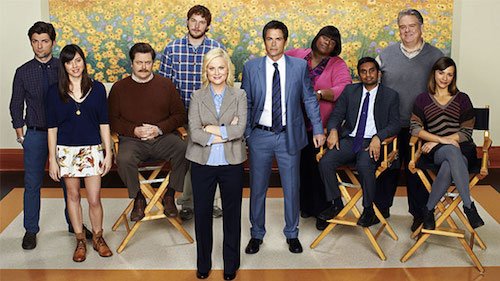
The Mindy Project
This show is about the OB/GYNs at a practice in Manhattan.
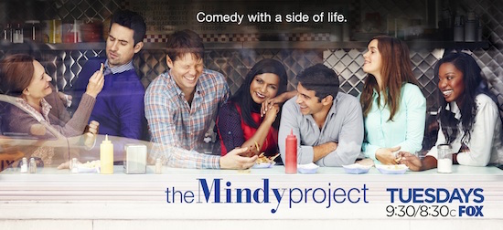
Fresh Off the Boat
This show is set in the 1990s about an Asian family who just moved from Chinatown in DC to Orlando.
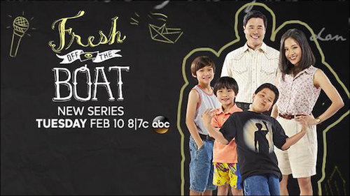
House Hunters
This HGTV is about people trying to find their perfect home.
Hawaii Five-0
This show is about a special police unit in Honolulu, Hawaii.
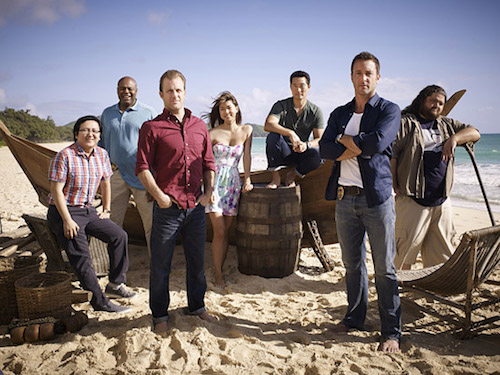
Teen Wolf
This show is about a teenager who gets turned into a werewolf and the events that follow.
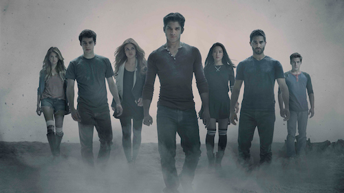
New Girl
This show is about five roommates who live in a loft in Los Angeles.
Modern Family
This comedy is about three crazy, diverse families that are all related.
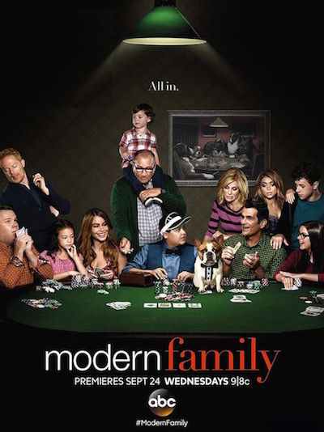
Chicago Fire
This show is about the lives of the firefighters from Chicago Fire Department's Engine 51.
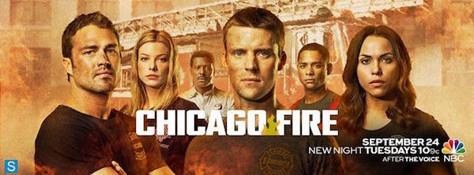
Chicago PD
This show is a spin-off of Chicago Fire and follows the lives of the police officers in the Intelligence unit of the CPD.
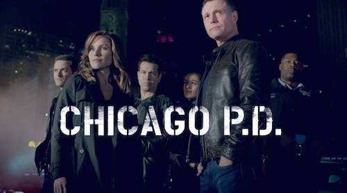
Friends
This show centers around the lives of six friends living in Manhattan.
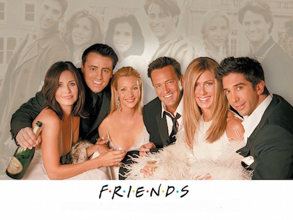
Buffy the Vampire Slayer
This show is about high schooler Buffy Summers, who is also a vampire slayer.
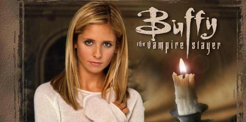
Happy Endings
This show is about the lives of six friends living in Chicago.
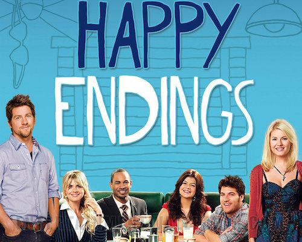
Veronica Mars
This show follows the life of high school girl/private investigator, Veronica Mars, as she solves the crimes in her wealthy hometown of Neptune, California.
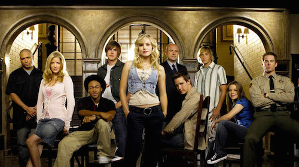
Bob's Burgers
This animated show is about the Belcher family who own a burger restaurant in a beach town.
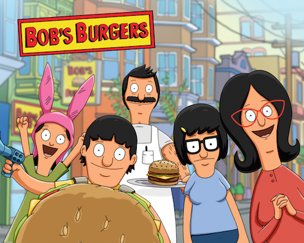
One Tree Hill
This show centers around the relationship between two half-brothers living in Tree Hill, North Carolina.
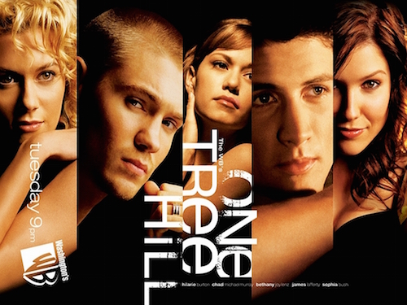